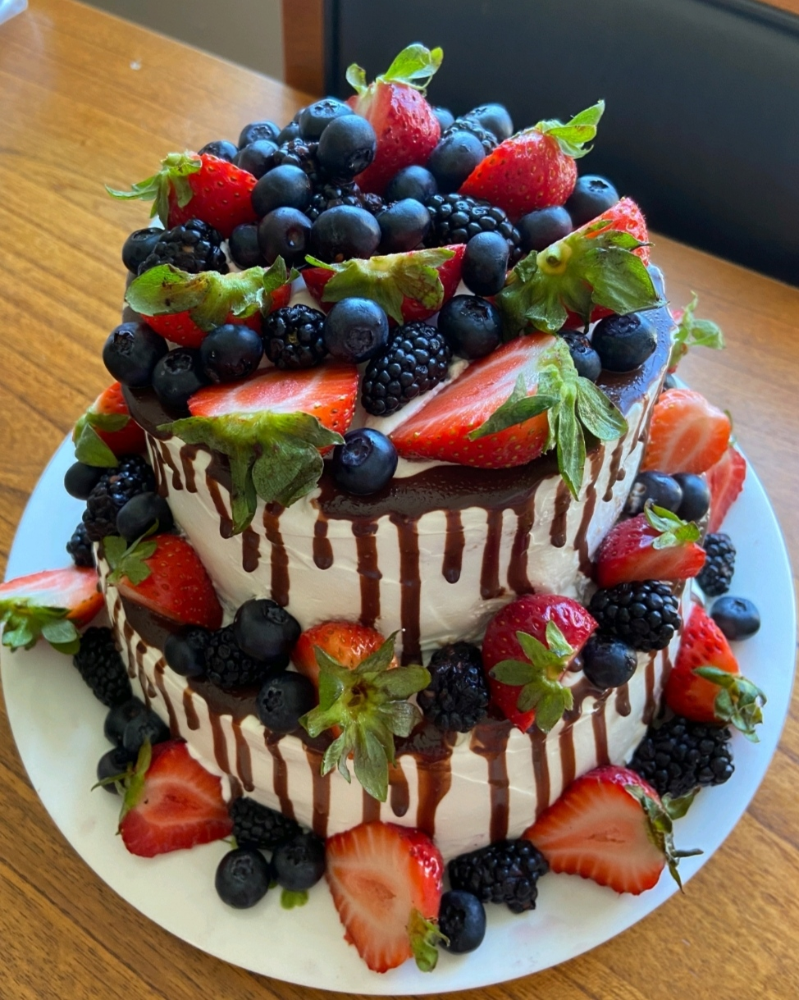

Berry Cake

Ingredients:
Biscuit:
- Eggs - 4
- Sugar - 120gr
- Flour - 120gr
- vanilla- 1/2 tsp
Cream:
- Heavy wipping cream - 400ml
- Condensed milk - 100ml
Filling:
- Strawberry - 400gr
- Blueberry - 200gr
- Milk or water with 1 tsp sugar - 100ml
Direction:
- To prepare a biscuit, we need to break 4 eggs, add sugar to them and beat until fluffy and stable mass. Then, in a separate bowl, mix all dry ingredients, flour, baking powder, starch, vanilla powder. We add the entire dry mixture to the egg mass in 3 stages, passing through a sieve. Mix the resulting mass gently, moving from top to bottom. We cover a baking sheet with a diameter of 20 cm with baking paper, put the resulting mass there. In a preheated oven 375K put protvin, about 30 minutes, be guided by your oven. Let the resulting biscuit cool on a wire rack. Cooled biscuit cut into 3 equal parts.
- To prepare a cream, we need to wip heavy wipping cream with condensed milk to stable peaks.
- For filling we need to wash all berries and cut strawberries into cubes.
Cake assembly:
Soak each layer with impregnation or syrup, then apply cream and filling on each layer.We level the cake and decorate it with the remains of berries and you can put some melted chocolate on surface of cake.